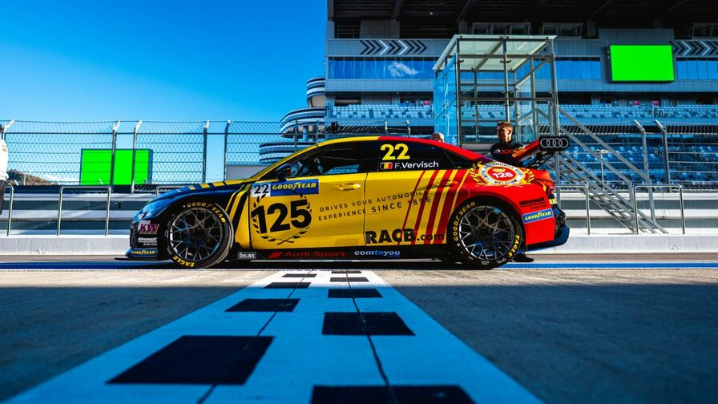

МИРОВОЙ ТУРИНГ СНОВА В РОССИИ: ЧТО НУЖНО ЗНАТЬ ОБ ЭТАПЕ WTCR В СОЧИ?
Гранд-финал чемпионата, прощальная гастроль 59-летнего ветерана и дебют российской команды. Рассказываем о главных интригах стартовавшего гоночного уик-энда на Сочи Автодроме...
ПОЧЕМУ RED BULL НЕ СМОГЛА УГНАТЬСЯ ЗА MERCEDES В КАТАРЕ? ТРИ ОСНОВНЫЕ ПРИЧИНЫ
Второй этап подряд лидер чемпионата Макс Ферстаппен был вынужден минимизировать потери и лишь наблюдать, как его главный соперник летит к победе. Что на этот раз помешало Red Bull?
РОССИЙСКАЯ ДРИФТ СЕРИЯ ПРОВЕЛА МОЩНЫЙ ГОНОЧНЫЙ СЕЗОН В 2021 ГОДУ
В минувшие выходные на «Сочи Автодроме» завершился финал Гран При Российской Дрифт Серии. Сезон 2021 года был невероятно интересным для пилотов, команд, зрителей и всех поклонников дрифта, поскольку российский чемпионат собрал спортсменов первой величины со всего мира. Интрига в борьбе за титул чемпиона сохранялась вплоть до финального заезда.
| СПРАВОЧНИК АВТОСПОРТА | |||
| ПОЛОЖЕНИЕ В ЧЕМПИОНАТЕ Ф1 | |||
| Личный зачет | |||
| 1. |  |
МАКС ФЕРСТАППЕН | 351.5 |
| 2. |  |
ЛЬЮИС ХЭМИЛТОН | 343.5 |
| 3. |  |
ВАЛТТЕРИ БОТТАС | 203 |
| 4. |  |
СЕРХИО ПЕРЕС | 190 |
| 5. | |
ЛАНДО НОРРИС | 153 |
| 6. |  |
ШАРЛЬ ЛЕКЛЕР | 152 |
| 7. |  |
КАРЛОС САЙНС | 145.5 |
| 8. |  |
ДАНИЭЛЬ РИККАРДО | 105 |